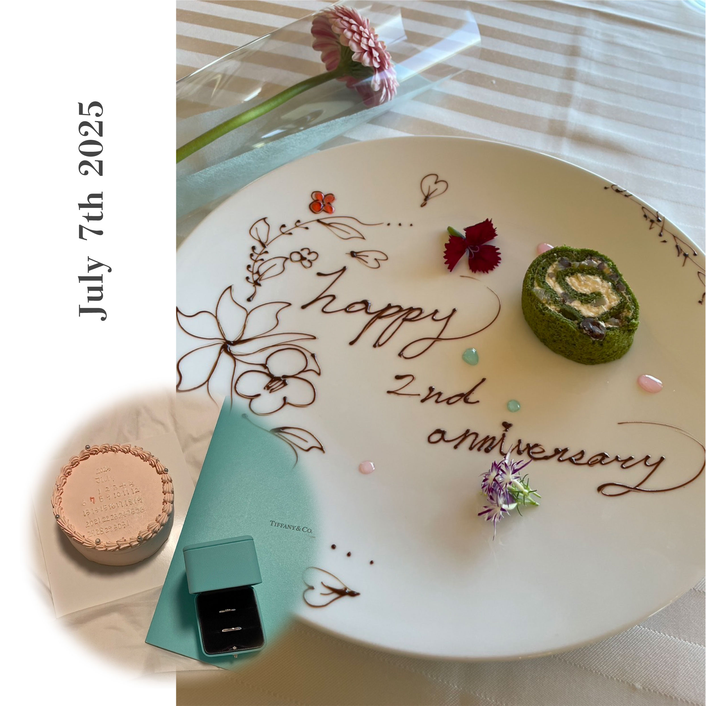

「大切な日を一枚に」
授業課題 Photoshopコラージュ

Overview
- 課題制作 制作全般
- 制作時期：2025年
- 使用ツール：Illustrator Photoshop
Concept
本作は、記念日という個人的な時間を、一枚のイメージとして留めることを目的に制作した作品です。 食事や贈り物、花といった断片的な要素を組み合わせ、特別な一日が持つ空気感を表現しています。 実際の出来事と記憶の中の印象が混ざり合う感覚を意識しました。 本作は、華やかさよりも静かな余韻を大切にし、過ぎ去った時間をそっと振り返るためのイメージとして構成しています。